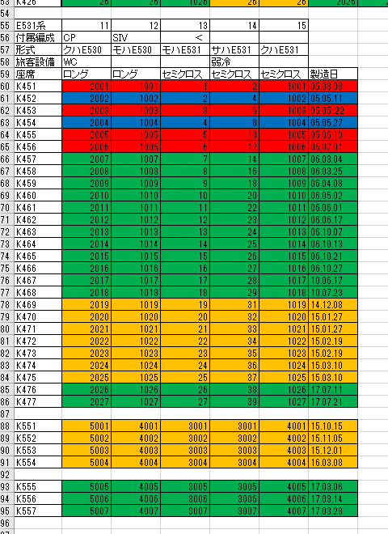
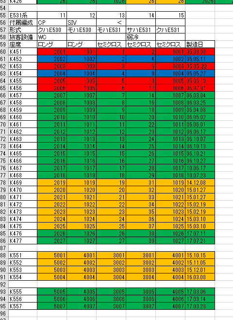
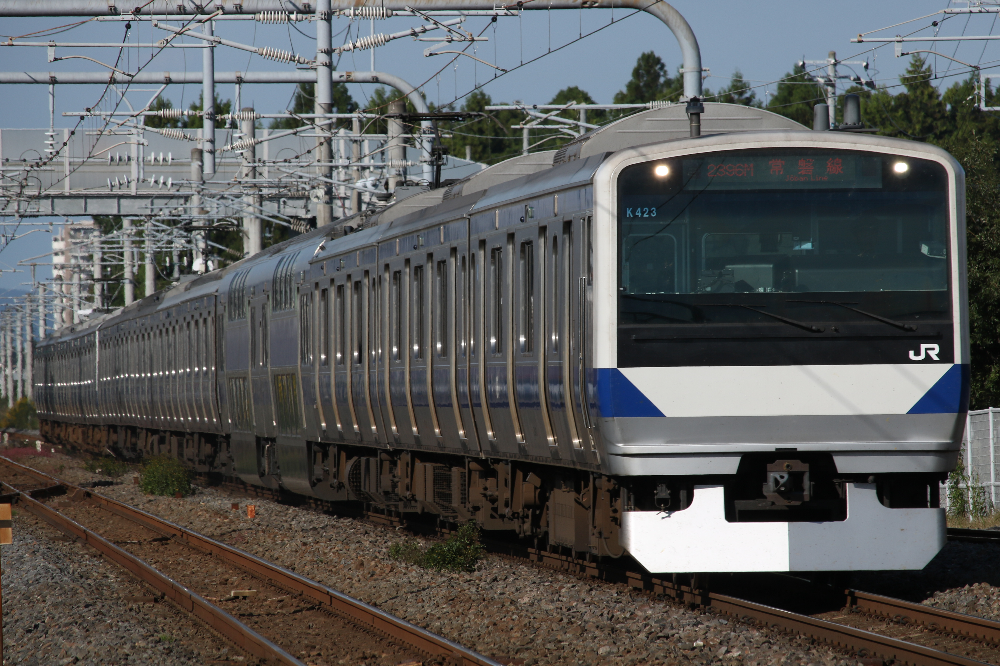
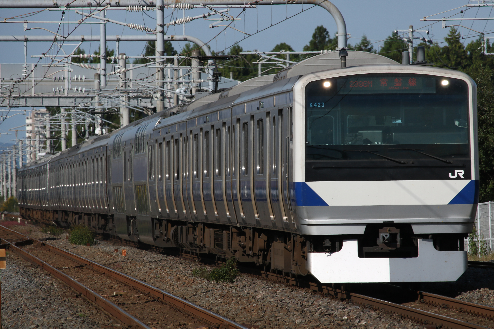
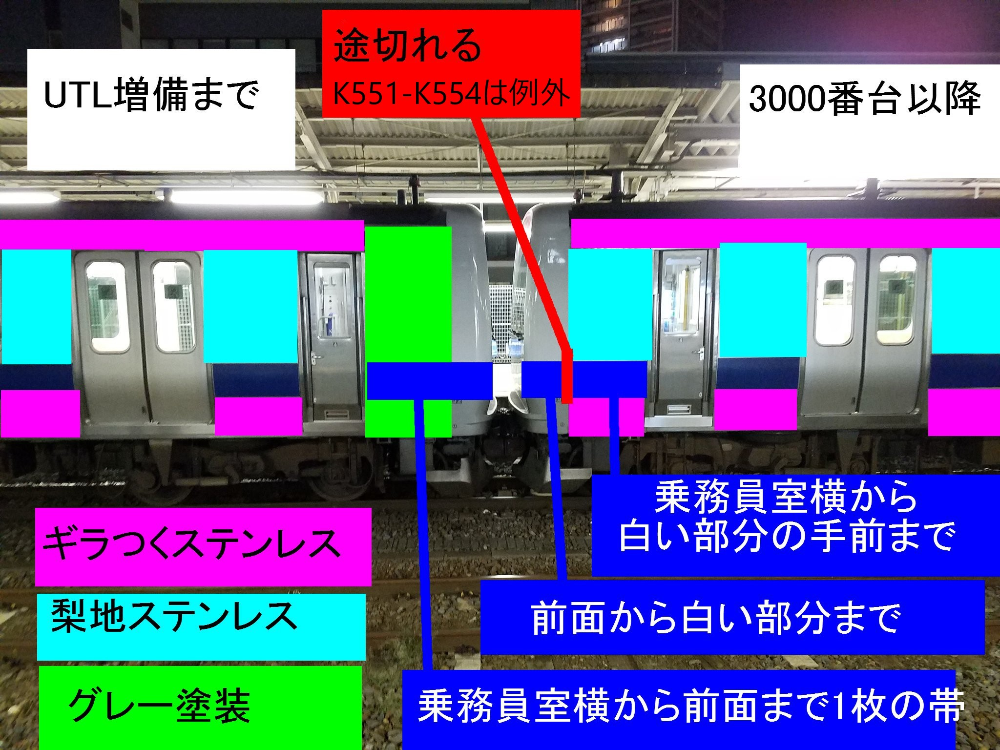
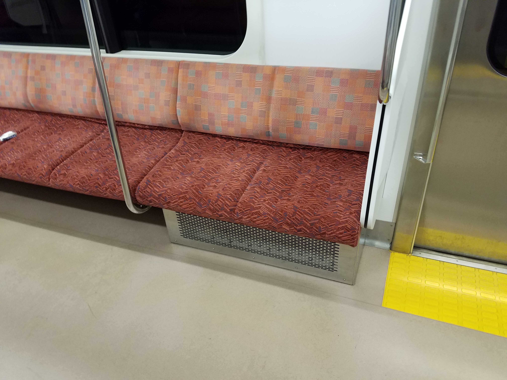
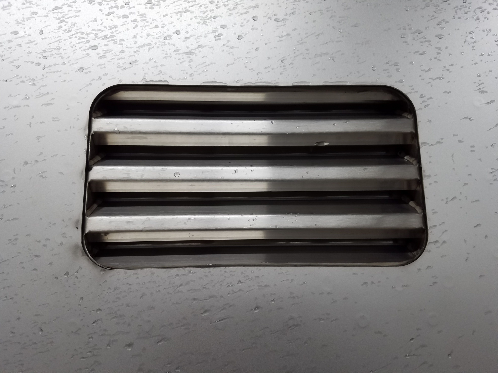
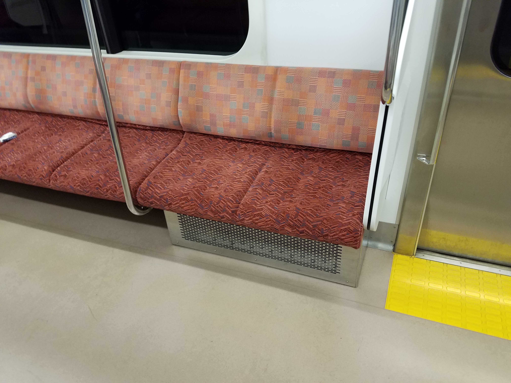
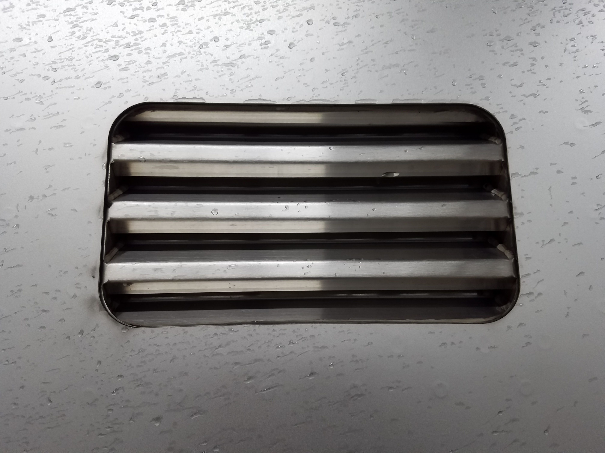
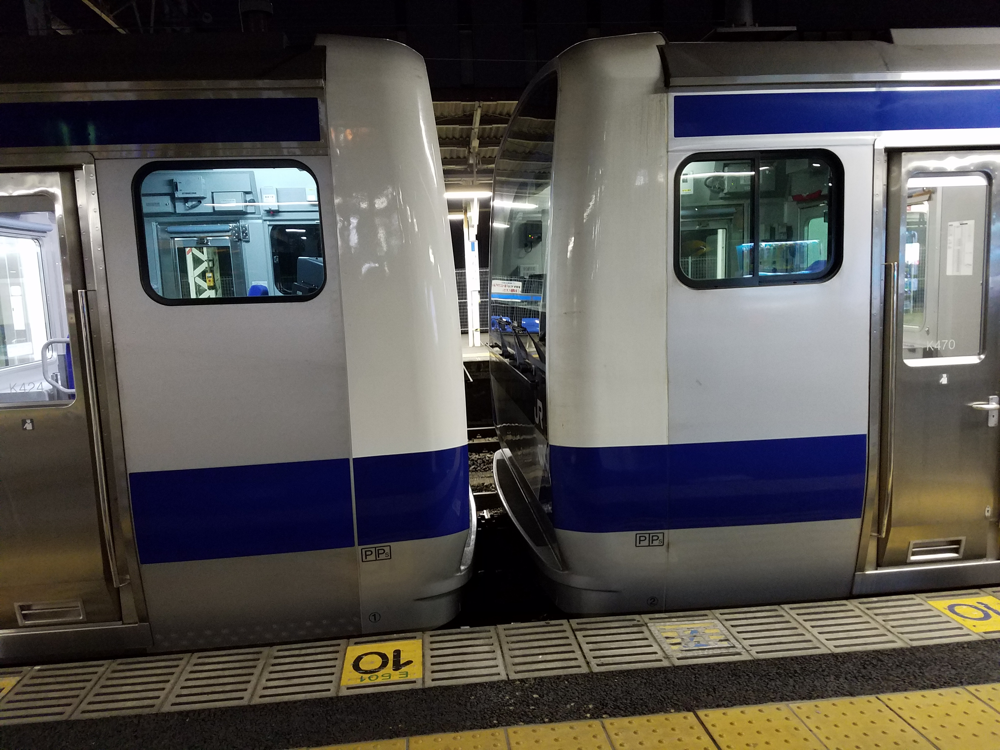

E531系
E531系はご存知の通り常磐線で使用されている交直両用車両です。最高速度が130km/hであったり近郊用途であるのに起動加速度が2.5km/h/sであったり、特徴的な車両であることは周知のとおりですが、製造期間が長年にわたっていることもあり仕様差がかなり激しくあります。これを紹介していきたいと思います。編成表は以下の通りです
 

K401-K406,K451-K456
最初期に製造されたグループです。川崎重工と東急車両で全車平屋で製造されました。E531系の列車無線アンテナは2本搭載されているのですが、登場時は1本のみ刺さった状態で登場し、のちに増設されました。 幼少期に撮影した写真のためお見苦しい写真ですが、
後ろのアンテナが準備工事に留められていることがお判りいただけるかと思います。
幼少期に撮影した写真のためお見苦しい写真ですが、
後ろのアンテナが準備工事に留められていることがお判りいただけるかと思います。またこのグループは半自動ドアボタンの案内のステッカーがドアに張り付けられていました。
 後述する組み換え後もこのグループとして製造された車両にはステッカーが残り、
9号車のアクセントとなっていましたが2016年頃剥がされてしまいました。
後述する組み換え後もこのグループとして製造された車両にはステッカーが残り、
9号車のアクセントとなっていましたが2016年頃剥がされてしまいました。このグループは川重と東急で製造されたためメーカーによる仕様差も存在しています。
画像左が川重製、右が東急製です。妻面のビードの有無、雨樋の処理に違いがみられます。 また車番のステッカーが川重製は光沢のあるもの採用されていますが 川重以外のものは非光沢のものが採用されています。

K407-K411,K457-K466
E531系はこのグループまで全車平屋で製造されましたが、 このグループは将来のG車組込みを考慮した設計となりました。 具体的には、初期車の4,5号車にはコンプレッサーの搭載されていないサハE531が連結されていますが これがG車に置き換えられ、将来製造される編成の9号車へ移動することになりました。 このグループは4,5号車にコンプレッサーの搭載されたサハE530を連結しておき、 G車に置き換えられた時は将来製造される編成の6号車に回されました。G車を除き全車新津製です。
 2016/12/27 北千住にて
2016/12/27 北千住にて
K412-K421
G車を除き全車新津製で、新津から6両で新製され回送され、別に東急川重で製造したG車と 前述の編成の4,5号車に連結されていたサハを6号車と9号車へ組込み10両に組成されたグループです。K422
基本的にはK412-K421と大差はないです。 ただし6号車に組み込まれているサハE530-2022、これは製造途中でG車を組み込むよう計画変更されたため コンプレッサーのついていないサハE531-2012が余ってしまい、CPを取り付ける改造と改番を行った車両です。 半自動ドアの案内ステッカーが残っていたころは平屋全車についているもしくは9号車のみついている、 というのが基本でしたがこの編成のみ6号車にもステッカーがついており異彩を放っていました。K467,K468
E501系には予備車がありません。そのE501系の床下機器更新(ドレミの更新)には2か月ほど要したそうです。 その間の予備車が不足するため製造されたグループです。前の編成から3年ほど開けての製造になりました。列車無線アンテナが台座付きに変更されました。
台座付きアンテナとラジオアンテナが共存している編成はこの2本だけなので特徴的な編成といえるでしょう

K423
上野東京ライン開業に伴い増備された編成です。 基本編成としては実に8年ぶりの製造、横浜で製造されました。ラジオアンテナの搭載がなくなり、側灯がクリアのものへ変更、 トイレ内のステッカーの図柄が「！」からイラストへ変更されました


 
2016/10/18 ひたち野うしくにて

2016/10/18 ひたち野うしくにて
K469-K475
K423と同じように上野東京ラインの増発前に製造されましたが、K423より少し遅れて製造されました。 製造時期に大差はないものの、ドアチャイムの音が低いものへ変更されました。K551-K554
このグループは3000番台と区分され、東北本線への投入のため仕様変更されたものと思いますが、 製造から東北本線進出までにはかなりラグがありました。なぜこうなったのか、私にはわかりません。3000番台としての仕様変更は、スノープラウの搭載、モーターの変更、それに伴う車体へのルーバーの設置、 一部の座席下に片持ち式を取りやめてのヒーターの強化、などがあげられます。
これ以降の0番台にも共通する仕様変更は座席が柔らかいものへ変更されたこと、 先頭部分の構造の変化があげられます。これについては文字で説明しきれません。 次の画像をご覧ください。※画像に記載漏れがあります、ランボードが延長されたのもこのグループからです 
 総合車両製作所を出場し試運転を兼ねて勝田へ送り込まれる姿 2015/10/15 南柏にて


総合車両製作所を出場し試運転を兼ねて勝田へ送り込まれる姿 2015/10/15 南柏にて


K555-K557
前回の製造から時間を置き、再度増備された3000番台です。 東北本線への投入に向け再度増備されたものと思われますが東北本線で使う本数以上に製造され、 普通に常磐線品川口に来たりします。なんなんでしょうか...前回製造からは帯に変更がありました。帯が途切れているのがお判りいただけるでしょうか 
K424-K426,K476-K477
2017年10月、常磐線はダイヤ改正され、 ラッシュ時にも上野東京ラインへE531系による土浦方面からの列車が入るようになりました。 当時通学で利用しており、この改正は非常に嬉しかった記憶があります。 それに向け増備されたのがこのグループになります。グリーン車を横浜で製造し、新津に回送し新津で製造した平屋8両とつないで10両で尾久まで回送、 自走試運転で勝田へ送り込み、という面白い製造のされ方をしました。
変更点としては車内照明が蛍光灯からLEDになりました。

 2017/06/20 撮影地不詳
2017/06/20 撮影地不詳
 2017/08/20 宮原-大宮にて
2017/08/20 宮原-大宮にて
まとめ
いかがでしたでしょうか。平凡な車にみえるE531ですが、よくよく見るとかなり面白い車両です。 それが伝われば幸いです。最後に編成による形態差の表と組み換えの図をお見せして終わりたいと思います。